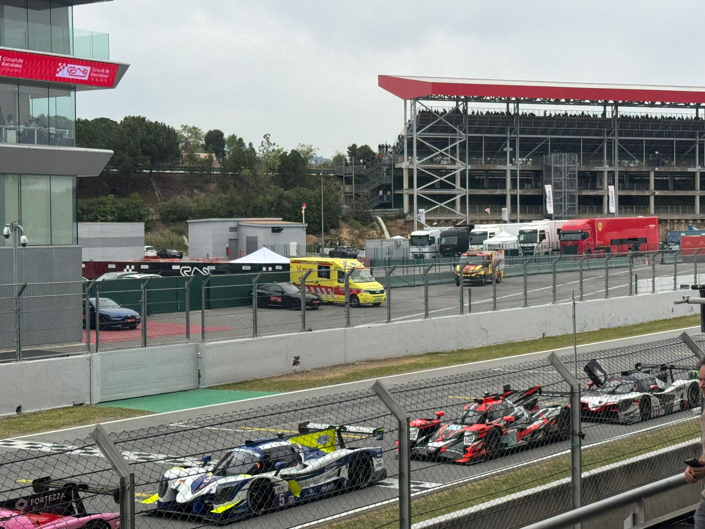
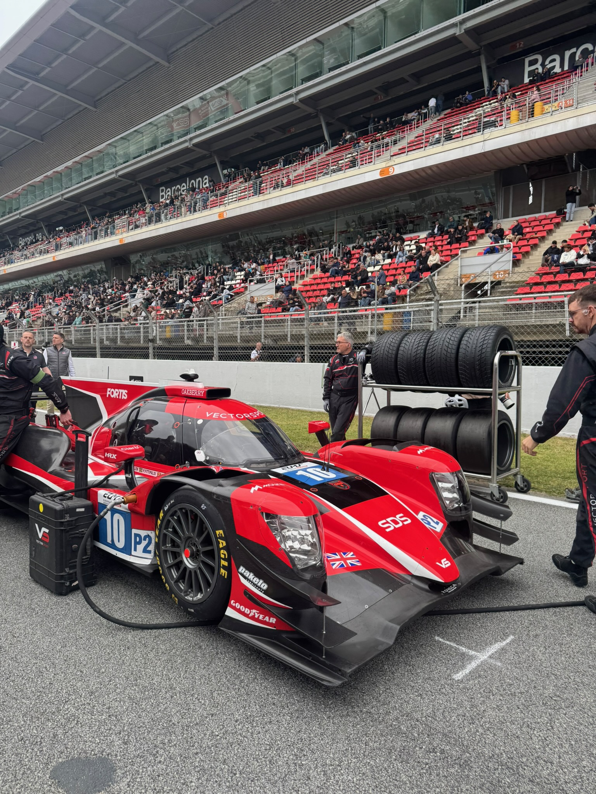
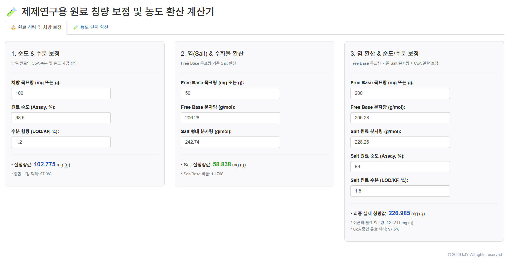
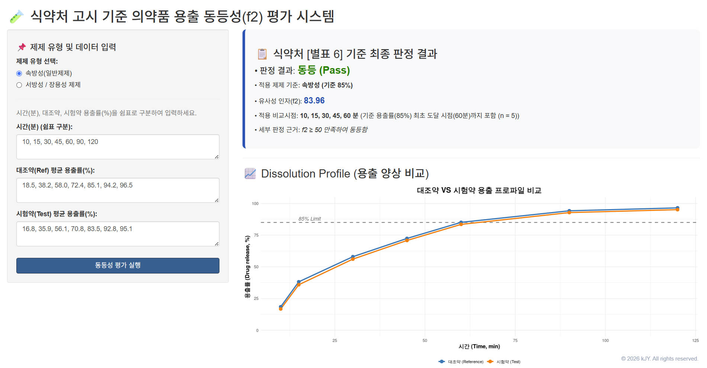
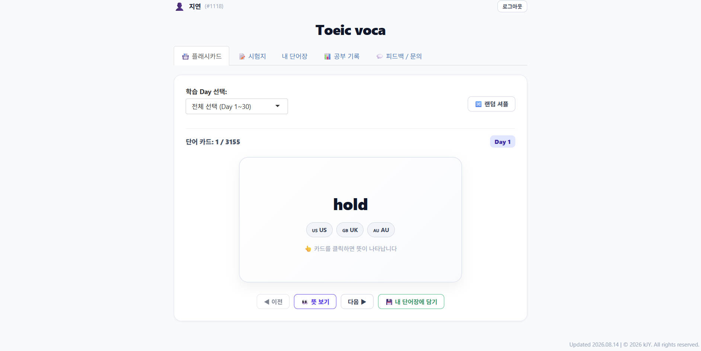
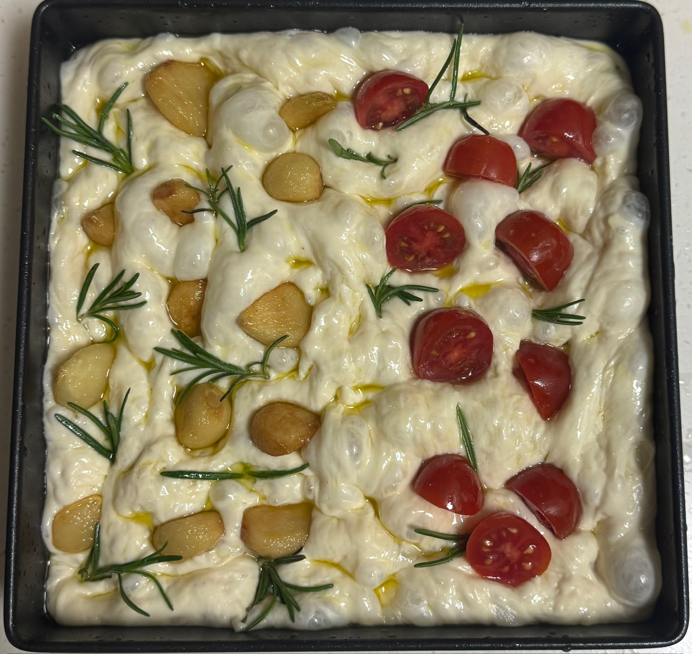
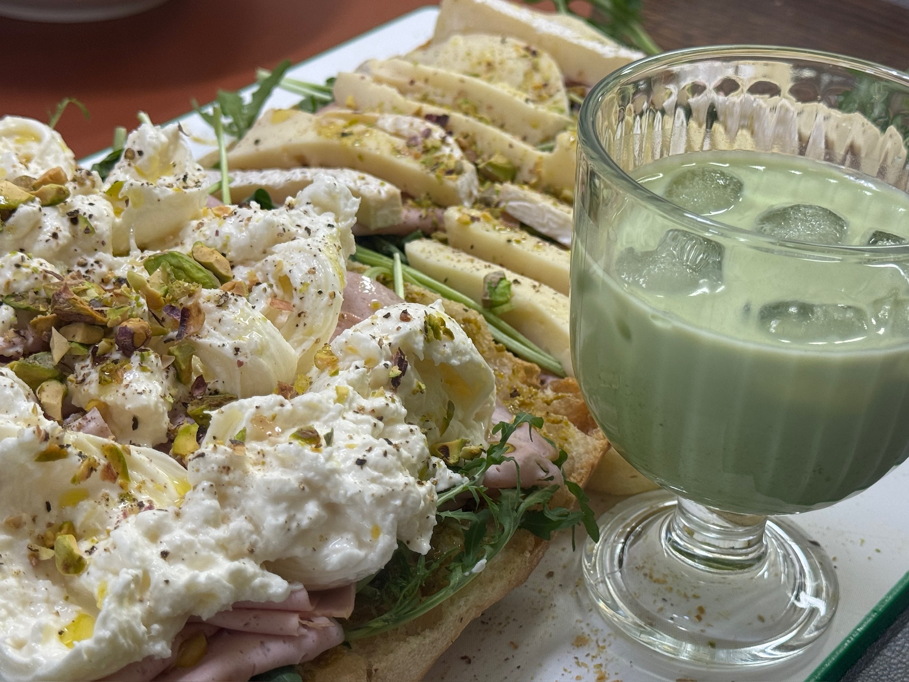

취미 및 관심사 (Hobbies & Interests)
English Version | 한국어 버전
🌟 연구실 밖의 관심사: 호기심과 엔지니어링의 연결
연구실 밖에서의 취미 활동은 제약 공학 연구에서 발휘되는 분석적 사고, 문제 해결 능력, 그리고 실험적 탐구심과 깊이 맞닿아 있습니다.
🏎️ 모터스포츠 & Formula 1: 유체역학과 전략의 만남
- 관심을 갖게 된 계기 (CFD와의 접점):
제약 공정 시뮬레이션 및 분체 유동성 최적화를 위해 전산유체역학(CFD)을 공부하던 중, 공기역학(Aerodynamics)과 데이터 기반의 초정밀 제어를 극한으로 활용하는 Formula 1의 엔지니어링에 매료되었습니다. 데이터 텔레메트리를 분석하고 최적의 셋업을 찾는 과정은 제약 QbD(설계기반 품질고도화)의 공정 최적화와 많은 공통점을 지니고 있습니다. - 현장 경험:
2026년 4월, 스페인 바르셀로나 카탈루냐 서킷에서 열린 유러피언 르망 시리즈(ELMS)를 직접 참관하였습니다. 극한의 환경에서 펼쳐지는 내구 레이스 엔지니어링과 피트스톱 전략을 현장에서 체감하며 정밀 공학의 매력을 깊이 경험했습니다.


💻 실용적인 웹사이트 제작: 데이터와 문제를 해결하는 도구 개발
- 시작 계기 (연구실 후배들을 위한 계산 툴):
대학원 과정 중 후배 연구원들이 복잡하고 반복적인 제제 관련 농도·처방 비율 계산에 어려움을 겪는 것을 보고, 실험 오류를 줄이고 연구 효율을 높여줄 수 있는 제약 계산 전용 웹 애플리케이션 및규제 가이드라인(MFDS/FDA) 기준에 맞추어 대조약과 시험약의 시점별 용출률 데이터를 입력하면, 유사성 인자를 계산해주는 용출 동등성 통계 평가 웹 시스템을 직접 기획·개발하였습니다. - 학습 도구 개발로의 확장:
주변 친구들의 어학 공부를 돕기 위해 토익 기출 어휘 및 문제 풀이 웹 플랫폼 을 제작하여 배포하였으며, 최근에는 독일어에 관심이 생겨 효율적으로 단어를 암기하고 복습할 수 있는 독일어 학습 전용 사이트를 자체 제작하여 활용하고 있습니다.



🥐 베이킹 & 요리: 일상에서 구현하는 제형 설계(Formulation)
- 지도교수님의 한마디에서 시작된 취미:
대학원 시절 지도교수님께서 “제제 연구를 잘하는 사람은 요리와 베이킹도 정밀하게 잘한다”고 말씀하신 것을 계기로 본격적으로 베이킹을 시작하게 되었습니다. - 정밀 계량과 물성 제어의 즐거움:
원료를 정밀하게 계량하고, 수분량(Hydration), 발효 온도, 배합 비율을 미세하게 조절하여 목표한 기공 구조와 텍스처를 구현하는 과정은 실제 제형 설계 실험과 매우 닮아 있습니다. - Specialty - 포카치아 (Focaccia):
특히 높은 수분율과 저온 숙성 발효를 통해 겉은 바삭하고 속은 촉촉한 기공을 살린 포카치아 만들기에 가장 자신 있으며, 발효 조건과 수분 제어를 섬세하게 조절하는 과정을 즐깁니다.

